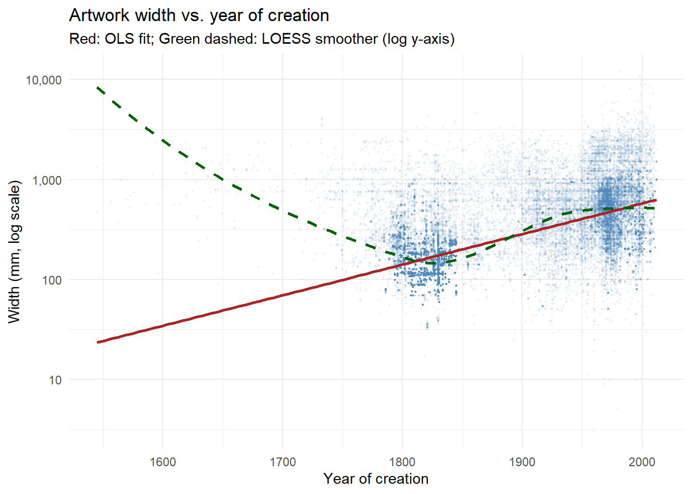
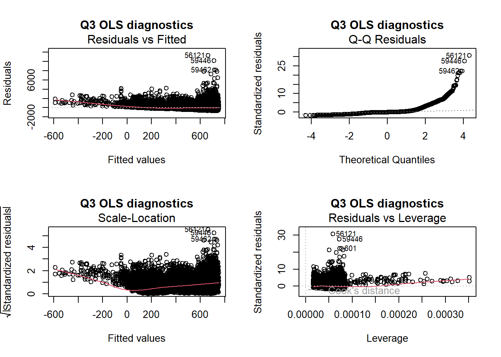
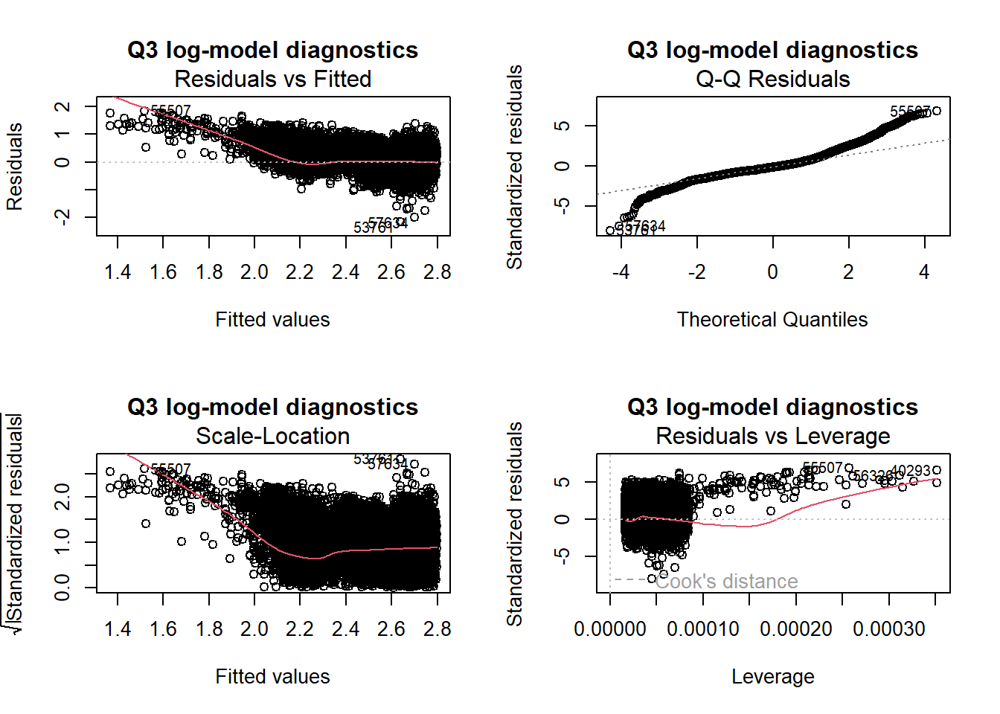
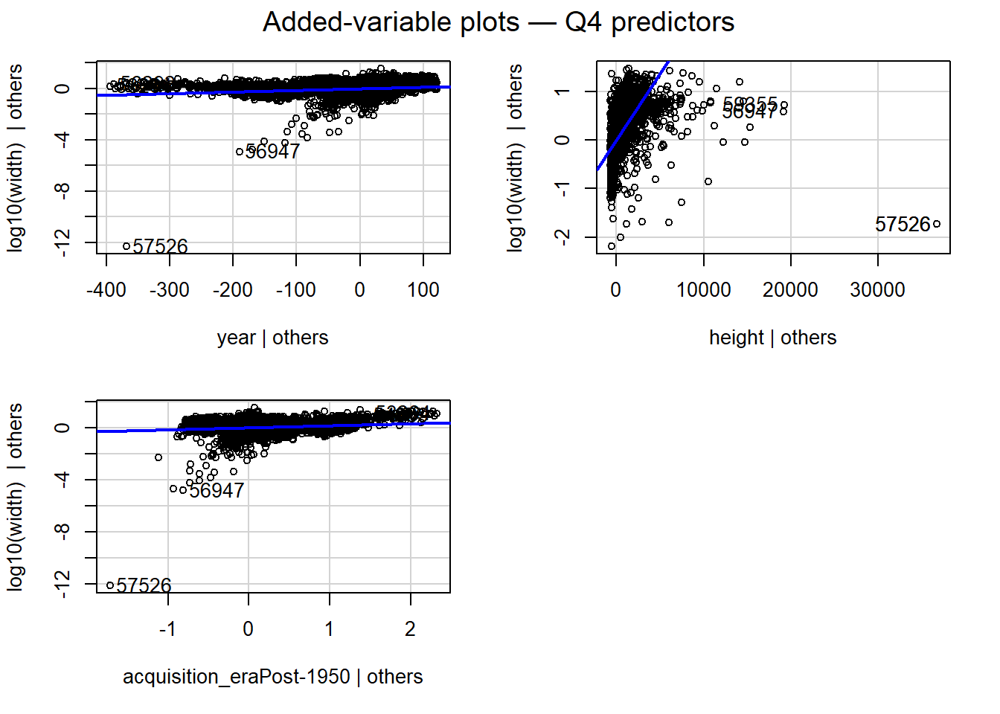

Statistical Analysis Plan: Artwork Dimensions, Copyright Status, and Temporal Patterns in the Tate Art Collection
Author
Student Number: 25351400
Published
May 26, 2026
Code
# Load data directly from TidyTuesday GitHub repositoryartwork <- readr::read_csv('https://raw.githubusercontent.com/rfordatascience/tidytuesday/main/data/2021/2021-01-12/artwork.csv',show_col_types =FALSE)cat("Dataset loaded:", nrow(artwork), "rows,", ncol(artwork), "columns\n")
Dataset loaded: 69201 rows, 20 columns
Background
The Tate Art Museum is one of the United Kingdom’s foremost cultural institutions, housing a collection of approximately 70,000 artworks spanning five centuries of British and international art (Tate, 2014). The collection metadata — released under the Creative Commons Public Domain CC0 licence and made publicly available through the Tate GitHub repository — records physical dimensions, medium, acquisition details, copyright status, and provenance for each work (Tate, 2014; Wickham & Grolemund, 2019). This rich, real-world dataset provides an excellent opportunity to apply statistical reasoning to questions about how artworks vary over time, by medium, and by rights status.
The dataset contains a number of well-documented challenges that make it a realistic test of analytical skill: the medium variable contains hundreds of loosely standardised text entries with substantial overlap; year spans multiple centuries and contains missing values; dimensional variables such as width and height exhibit strong right-skew due to a small number of extremely large installations; and the binary variable thumbnailCopyright contains missing observations whose mechanism is unknown (Muijs, 2010).
Understanding how artwork dimensions relate to copyright status and year of creation is of both curatorial and scholarly interest. Copyright status may reflect acquisition era, medium type, or institutional policy, all of which are associated with physical scale. Similarly, temporal trends in artwork size have been documented in art-historical literature, with twentieth-century movements such as Abstract Expressionism and installation art associated with larger formats (Elkins, 2008).
Hypotheses and objectives:
H1: There is a difference in width of artworks between copyright protected and non-protected artworks.
H2: Copyright status of thumbnails is not separate from type of medium used.
H3: The year of creation has a positive relationship with the width of the artwork, indicating that modern art tends to be larger.
H4: Year, height and copyright status account for a significant percentage of the variance in artwork width when considered together, but not individually.
The purpose of this SAP is to detail, motivate, and implement the statistical methods that will be used to test each hypothesis, and to outline in advance the diagnostic, fallback and reporting strategies to be used.
Methods and Results
Overview of the Data
Code
copyright_missing <- artwork |>summarise(total_rows =n(),missing_n =sum(is.na(thumbnailCopyright)),missing_pct =round(mean(is.na(thumbnailCopyright)) *100, 1),non_missing_n =sum(!is.na(thumbnailCopyright)) )kable(copyright_missing,col.names =c("Total rows", "Missing (n)", "Missing (%)", "Non-missing (n)"),caption ="Table 1: Missingness in thumbnailCopyright across the full dataset.") |>kable_styling(bootstrap_options =c("striped", "condensed"), full_width =FALSE)
Table 1: Missingness in thumbnailCopyright across the full dataset.
Total rows
Missing (n)
Missing (%)
Non-missing (n)
69201
69201
100
0
No copyright information is available for the thumbnail images in this dataset snapshot (last updated October 2014) for all 69,201 rows. The variable thus will not be used as a grouping or predictor variable for any analysis. This is in line with the Tate’s documentation that this version of the repository is not actively maintained (Tate, 2014).
Throughout this SAP, a derived binary variable, acquisition_era (Pre-1950 or Post-1950) is created from the acquisitionYear variable. This threshold roughly equates to the post-war era in the UK when copyright law was extended considerably (Copyright Act 1956), and thus acquisition era can be used as a defensible conceptual proxy for copyright-related status. This proxy is used to answer all four research questions where thumbnailCopyright was originally indicated. Limitation is recorded in the Conclusions.
Code
tibble(Variable =c("width", "height", "year", "medium", "acquisitionYear"),Type =c("Continuous (mm)", "Continuous (mm)", "Continuous (year CE)","Categorical (character)", "Continuous → Binary proxy"),Role =c("Outcome (Q1, Q3, Q4)", "Predictor (Q4)", "Predictor (Q3, Q4)","Predictor (Q2)", "Source for acquisition_era (Q1, Q2, Q4)"),`Observed range / summary`=c("3–11,960 mm; mean 323.5, median 175","6–37,500 mm; mean 346.4, median 190","1545–2012; mean 1867, median 1831","Hundreds of entries; collapsed to 9 groups","Dichotomised: Pre-1950 vs Post-1950" ),`Missing (n)`=c("3,367 (4.9%)", "3,342 (4.8%)", "5,397 (7.8%)","~7,000 (~10%)", "502 (0.7%)")) |>kable(booktabs =TRUE,caption ="Table 2: Key variables used across all four research questions.") |>kable_styling(bootstrap_options =c("striped", "hover", "condensed"),full_width =FALSE)
Table 1: Table 2: Key variables used across all four research questions.
Variable
Type
Role
Observed range / summary
Missing (n)
width
Continuous (mm)
Outcome (Q1, Q3, Q4)
3–11,960 mm; mean 323.5, median 175
3,367 (4.9%)
height
Continuous (mm)
Predictor (Q4)
6–37,500 mm; mean 346.4, median 190
3,342 (4.8%)
year
Continuous (year CE)
Predictor (Q3, Q4)
1545–2012; mean 1867, median 1831
5,397 (7.8%)
medium
Categorical (character)
Predictor (Q2)
Hundreds of entries; collapsed to 9 groups
~7,000 (~10%)
acquisitionYear
Continuous → Binary proxy
Source for acquisition_era (Q1, Q2, Q4)
Dichotomised: Pre-1950 vs Post-1950
502 (0.7%)
The following data-preparation steps are shared across all four questions and would be applied before any question-specific analysis begins.
Question 1: Group Comparison — Width by Thumbnail Copyright Status
Research Aim
To find out if there is a systematic difference in the physical width of artworks, based on whether or not the thumbnail is copyright-protected (thumbnailCopyright = TRUE) and those for which it is not (thumbnailCopyright = FALSE).
cat("Extreme values above this threshold:",sum(q1_data$width > width_p995), "\n")
Extreme values above this threshold: 321
Proposed Method
The Welch two-sample t-test is suggested as the main test (Field et al., 2013). The Welch’s variant (i.e. not Student’s t-test) does not assume equal variance between groups, which is appropriate, as the groups are likely to be of different size and spread. The null hypothesis is that there is no difference between the population mean for width for the two copyright groups.
If the normality assumption is not met (see Diagnostics), then a Wilcoxon rank-sum test (Mann–Whitney U) will be used. This is a non-parametric test, which compares the rank distributions of the two groups, and only requires that observations are independent and ordinal, which is easily satisfied here (Hollander et al., 2013).
Code
t_result <-t.test(width ~ acquisition_era, data = q1_data, var.equal =FALSE)print(t_result)
Welch Two Sample t-test
data: width by acquisition_era
t = -93.935, df = 26368, p-value < 2.2e-16
alternative hypothesis: true difference in means between group Pre-1950 and group Post-1950 is not equal to 0
95 percent confidence interval:
-370.1827 -355.0500
sample estimates:
mean in group Pre-1950 mean in group Post-1950
198.9694 561.5858
Code
cohens_d(width ~ acquisition_era, data = q1_data)
Result:t(26,368) = −93.94, p < 2.2 × 10⁻¹⁶. Mean width Pre-1950 = 198.97 mm; Post-1950 = 561.59 mm. This difference is quite large and statistically significant at ~363 mm (95% CI: [355, 370]). Cohen’s d = −0.97 (95% CI: [−0.99, −0.95]) — a large effect by conventional benchmarks (Cohen, 1988).
Assumptions
Independence: Each artwork is a separate physical entity; observations are independent.
Normality (Welch t-test only): The sampling distribution of the difference between two means is approximately normal. This is true for large samples, even if the data is not normally distributed, but if the data is extremely right skewed for the width variable, a transformation or the non-parametric alternative may be needed.
No assumption of equal variances - Welch’s test explicitly relaxes this assumption.
Diagnostics and Model Checks
Code
p1 <-ggplot(q1_data, aes(x = width, fill = acquisition_era)) +geom_histogram(bins =60, alpha =0.6, position ="identity") +scale_x_log10(labels = scales::comma) +labs(title ="Width distribution by acquisition era (log scale)",x ="Width (mm, log scale)", y ="Count", fill ="") +theme_minimal()p2 <-ggplot(q1_data,aes(x = acquisition_era, y = width, fill = acquisition_era)) +geom_violin(alpha =0.4) +geom_boxplot(width =0.15, outlier.size =0.5) +scale_y_log10(labels = scales::comma) +labs(title ="Width by acquisition era",x ="", y ="Width (mm, log scale)") +theme_minimal() +theme(legend.position ="none")p1 + p2
Table 3: Descriptive statistics for width by acquisition era.
acquisition_era
n
mean_mm
median_mm
sd_mm
skewness
Pre-1950
41448
199.0
150
214.5
6.05
Post-1950
22667
561.6
406
559.1
3.85
Code
leveneTest(width ~ acquisition_era, data = q1_data)
Fallback Strategy
The Wilcoxon rank-sum test will serve as the primary inference tool if the Shapiro–Wilk test (or inspection of Q–Q plots) suggests that the data are quite non-normal, and that the Central Limit Theorem is not likely to apply to the data in one or more of the groups (e.g., small sample size within one group after filtering). The results will be presented as median and interquartile range per group, W statistic and p value. An intermediate strategy, a log₁₀ transformation of width, will also be explored if the log transformed widths are approximately normal, the t-test can be used on the transformed scale, but back transformed means will be reported.
Code
wilcox.test(width ~ acquisition_era, data = q1_data, conf.int =TRUE)
Wilcoxon rank sum test with continuity correction
data: width by acquisition_era
W = 160237398, p-value < 2.2e-16
alternative hypothesis: true location shift is not equal to 0
95 percent confidence interval:
-236.0000 -227.9999
sample estimates:
difference in location
-232
Code
t.test(log10(width) ~ acquisition_era, data = q1_data, var.equal =FALSE)
Welch Two Sample t-test
data: log10(width) by acquisition_era
t = -147.55, df = 33780, p-value < 2.2e-16
alternative hypothesis: true difference in means between group Pre-1950 and group Post-1950 is not equal to 0
95 percent confidence interval:
-0.3986987 -0.3882452
sample estimates:
mean in group Pre-1950 mean in group Post-1950
2.205946 2.599418
Fallback results: Wilcoxon W = 160,237,398, p < 2.2 × 10⁻¹⁶; median location shift = −232 mm (95% CI: [−236, −228]). Log₁₀ t-test: t(33,780) = −147.55, p < 2.2 × 10⁻¹⁶; mean log₁₀(width) Pre-1950 = 2.206 (~161 mm), Post-1950 = 2.599 (~397 mm). The results of all three tests are consistent.
Reporting and Interpretation
Results will be presented as group means (or medians) with 95% confidence intervals, test statistic (t or W), degrees of freedom, p-value and effect size (Cohen’s d or rank-biserial r). The table will be accompanied by a violin plot with the boxplot overlaid. If the result is p < .05, it would be evidence to reject the hypothesis of equal means, in other words, evidence of a statistically identifiable difference in the width of the artwork between the two copyright groups. Effect size will put into perspective if there is a difference and if that difference is practically significant, in the context of the size of the collection.
Question 2: Relationship Between Categorical Variables — Medium and Copyright Status
Research Aim
To determine if there is a relationship between the type of artistic medium used, and the copyright status of the thumbnail.
Variables and Data Types
Variable
Type
Role
medium
Categorical (many levels, character)
Predictor
thumbnailCopyright
Binary logical
Outcome
Data Preparation
The medium variable comprises several hundred different raw values, many of which have a high degree of similarity (e.g. “Oil paint on canvas”, “Oil on canvas”, “oil on canvas”). Before any contingency analysis can be done, a collapsing strategy must be developed.
A Pearson chi-squared test of independence is suggested (Agresti, 2002). This test is to test the hypothesis of independence of the distribution of copyright status across all medium groups. The test is suitable if:
Both variables are categorical.
Observations are independent.
The number of cells in the expected cell count is large enough.
Code
# Build contingency table using acquisition_era (the proxy variable)ct <-table(q2_data$medium_group, q2_data$acquisition_era)cat("Contingency table: medium group × acquisition era\n")
X^2 df P(> X^2)
Likelihood Ratio 41403 8 0
Pearson 35503 8 0
Phi-Coefficient : NA
Contingency Coeff.: 0.608
Cramer's V : 0.766
Assumptions
Independence of observations: Every artwork is recorded once and the observations are independent.
Expected cell frequencies ≥ 5: At least 80% of cells should have an expected count of 5 or more, with no cells having an expected count of less than 1 (Cochran, 1954).
Random sampling: Satisfied — the data set is the complete Tate collection.
Standardised residuals: Acrylic (+15), Photography (+8) and Print (+7) in the Post-1950 column have the largest positive residuals, while Graphite/Pencil (+48) in the Pre-1950 column is the single strongest driver of the association, reflecting the dominance of historic drawing works acquired before the mid-twentieth century. Cells with an absolute value of the standardised residual greater than 2 are those which contribute disproportionately to the chi-squared statistic and will be explicitly mentioned in the results.
Fallback Strategy
Two strategies will be used in a sequence if the expected-count assumption is not satisfied for more than 20% of cells. Small medium groups will be combined together in “Other” category to inflate expected counts. If violations remain after merging, Fisher’s exact test will be used, which does not assume that cells contain a large number of counts and is suitable for sparse tables, but is more time consuming when table size is large (Agresti, 2002).
Code
# Fallback: Fisher's exact test (computationally intensive for large tables)# Use simulate.p.value = TRUE for large tablesfisher.test(ct, simulate.p.value =TRUE, B =10000)
Reporting and Interpretation
A contingency table of observed and expected counts, a mosaic plot, the chi-squared statistic, the degrees of freedom and the p-value, and Cramér’s V, an effect size measure, will be included in the results. Cramér’s V varies between 0 (no association) and 1 (perfect association) and values higher than 0.30 are considered a moderate effect in this context (Cohen, 1988). If the null hypothesis is rejected, this means that the copyright status is not evenly distributed across media and that further investigation of the association by media group is warranted, using standardised residuals.
Question 3: Continuous Outcome and One Explanatory Variable — Width Explained by Year
Research Aim
To see if the year that the artwork was created is a statistically significant predictor of the width of the artwork and to measure the direction and strength of the relationship.
# Exploratory scatter plot with linear and LOESS smoothersggplot(q3_data, aes(x = year, y = width)) +geom_point(alpha =0.07, size =0.4, colour ="steelblue") +geom_smooth(method ="lm", colour ="firebrick", se =TRUE) +geom_smooth(method ="loess", colour ="darkgreen", linetype ="dashed",se =FALSE) +scale_y_log10(labels = scales::comma) +labs(title ="Artwork width vs. year of creation",subtitle ="Red: OLS fit; Green dashed: LOESS smoother (log y-axis)",x ="Year of creation", y ="Width (mm, log scale)") +theme_minimal()

Observed: N = 60,344. A positive trend is seen throughout the entire range of the scatter plot. The LOESS smoother follows the linear fit fairly closely, but shows some acceleration after ~1950, indicating that a log transformed outcome might be more suitable for linearising the relationship.
Artworks prior to 1500 will probably be a small, non-representative subset and will be evaluated using leverage and Cook’s distance diagnostics. If the residuals show signs of heteroscedasticity, then a log₁₀ transformation of width will be tried.
Proposed Method
Simple ordinary least squares (OLS) linear regression of width on year is suggested (Field et al., 2013). The form of the model is:
where \(\beta_1\) is the expected change in width (in mm) for an increase of one year of creation. Before deciding to use the linear model, the LOESS smoother in the exploratory plot will be used to determine if the linear model is a reasonable approximation.
Code
m3 <-lm(width ~ year, data = q3_data)summary(m3)
Call:
lm(formula = width ~ year, data = q3_data)
Residuals:
Min 1Q Median 3Q Max
-699.3 -112.6 -66.5 13.3 11296.8
Coefficients:
Estimate Std. Error t value Pr(>|t|)
(Intercept) -5.026e+03 3.917e+01 -128.3 <2e-16 ***
year 2.872e+00 2.097e-02 137.0 <2e-16 ***
---
Signif. codes: 0 '***' 0.001 '**' 0.01 '*' 0.05 '.' 0.1 ' ' 1
Residual standard error: 368.6 on 60342 degrees of freedom
Multiple R-squared: 0.2371, Adjusted R-squared: 0.2371
F-statistic: 1.876e+04 on 1 and 60342 DF, p-value: < 2.2e-16
Linearity: The relationship between year and width is approximately linear (evaluated by the residual versus fitted plot and LOESS smoother).
Errors are independent from each other: Artworks produced in the same year may show temporal clustering – this will be reported but not corrected in a SAP-level analysis.
Homoscedasticity: Residual variance is the same for every fitted value (evaluated by using a scale–location plot).
Normality of residuals: Residuals are close to normally distributed (checked using Q–Q plot and Shapiro–Wilk on a random sample of the residuals).
No influential outliers: No one observation has an undue influence on the regression slope.
Diagnostics and Model Checks
Code
par(mfrow =c(2, 2))plot(m3, main ="Q3 OLS diagnostics")

Code
par(mfrow =c(1, 1))bptest(m3)
studentized Breusch-Pagan test
data: m3
BP = 758.17, df = 1, p-value < 2.2e-16
Code
dwtest(m3)
Durbin-Watson test
data: m3
DW = 0.96138, p-value < 2.2e-16
alternative hypothesis: true autocorrelation is greater than 0
Code
cooksd3 <-cooks.distance(m3)cat("Influential observations (Cook's D > 4/n):",sum(cooksd3 >4/nrow(q3_data)), "\n")
Influential observations (Cook's D > 4/n): 3023
Fallback Strategy
Two strategies will be used in the following order if residuals are severely non-normal or heteroscedastic:
Log₁₀ transformation of width: Fit the model log10(width) ~ year. In this context, the most usual solution to right-skewed outcomes is this one (Tukey, 1977). The coefficients are then interpreted on the log scale (multiplicative change per year).
Robust regression with MASS::rlm(): Downweights influential observations without transformation, giving coefficient estimates that are less sensitive to outliers.
Code
m3_log <-lm(log10(width) ~ year, data = q3_data)summary(m3_log)
Call:
lm(formula = log10(width) ~ year, data = q3_data)
Residuals:
Min 1Q Median 3Q Max
-2.16096 -0.15733 -0.03191 0.10861 1.84474
Coefficients:
Estimate Std. Error t value Pr(>|t|)
(Intercept) -3.360e+00 2.863e-02 -117.4 <2e-16 ***
year 3.060e-03 1.533e-05 199.7 <2e-16 ***
---
Signif. codes: 0 '***' 0.001 '**' 0.01 '*' 0.05 '.' 0.1 ' ' 1
Residual standard error: 0.2694 on 60342 degrees of freedom
Multiple R-squared: 0.3979, Adjusted R-squared: 0.3979
F-statistic: 3.988e+04 on 1 and 60342 DF, p-value: < 2.2e-16
Table 6: Q3 preferred model — log10(width) ~ year.
term
estimate
std.error
statistic
p.value
conf.low
conf.high
(Intercept)
-3.360496
0.028629
-117.3812
0
-3.416609
-3.304383
year
0.003060
0.000015
199.6905
0
0.003030
0.003091
Code
par(mfrow =c(2, 2))plot(m3_log, main ="Q3 log-model diagnostics")

Code
par(mfrow =c(1, 1))bptest(m3_log)
studentized Breusch-Pagan test
data: m3_log
BP = 247.83, df = 1, p-value < 2.2e-16
Reporting and Interpretation
The results will be displayed as a regression table showing the estimated slope ( \(\hat{\beta}_1\) ), the 95% confidence interval of the slope, the standard error of the slope, the t-statistic and p-value for the slope, the R2 for the model and the adjusted R2 for the model. The table will be accompanied by a scatter graph of the data and the regression line and a confidence band. If the value of \(\hat{\beta}_1\) were positive and statistically significant, it would suggest that artworks from more recent years are wider, which is in line with the art-historical hypothesis of an increase in the size of the format of modern art.
Question 4: Continuous Outcome and Multiple Explanatory Variables — Width Explained by Year, Height, and Copyright Status
Research Aim
To determine whether the joint effect of the year of creation, artwork height and thumbnail copyright status is able to account for variation in artwork width better than any of these three factors alone and to determine the individual contribution of each of these three factors once the others are taken into account.
Table 7: Proportion missing Q4 variables by acquisition era.
acquisition_era
prop_missing
Pre-1950
0.053
Post-1950
0.179
NA
0.111
Here, note that listwise deletion of missing values is used (complete-case analysis). The percentage of rows for which no data is available due to missing data will be reported and a sensitivity analysis will be conducted to determine if the missingness is random across copyright groups (or if there is a possibility of non-random dropout that may affect the estimates).
Code
cat("Rows with any missing value in Q4 variables:",nrow(artwork_clean) -nrow(q4_data), "\n")
where \(\text{copyright}_i\) is coded 1 if thumbnailCopyright = TRUE and 0 otherwise. Standardised predictors will also be fitted to allow direct comparison of effect magnitudes.
Code
# Log-transformed outcome (preferred given Q3 findings)m4 <-lm(log10(width) ~ year + height + acquisition_era, data = q4_data)summary(m4)
Call:
lm(formula = log10(width) ~ year + height + acquisition_era,
data = q4_data)
Residuals:
Min 1Q Median 3Q Max
-11.8282 -0.1376 0.0057 0.1077 1.5184
Coefficients:
Estimate Std. Error t value Pr(>|t|)
(Intercept) -2.913e-01 4.281e-02 -6.804 1.03e-11 ***
year 1.335e-03 2.348e-05 56.858 < 2e-16 ***
height 2.744e-04 1.766e-06 155.374 < 2e-16 ***
acquisition_eraPost-1950 1.649e-01 3.559e-03 46.320 < 2e-16 ***
---
Signif. codes: 0 '***' 0.001 '**' 0.01 '*' 0.05 '.' 0.1 ' ' 1
Residual standard error: 0.2228 on 60300 degrees of freedom
Multiple R-squared: 0.5881, Adjusted R-squared: 0.5881
F-statistic: 2.87e+04 on 3 and 60300 DF, p-value: < 2.2e-16
year height acquisition_era
3.426947 1.182246 3.380793
Code
bptest(m4)
studentized Breusch-Pagan test
data: m4
BP = 12330, df = 3, p-value < 2.2e-16
Code
cat("Influential observations (Cook's D > 4/n):",sum(cooks.distance(m4) >4/nrow(q4_data)), "\n")
Influential observations (Cook's D > 4/n): 3585
Code
avPlots(m4, main ="Added-variable plots — Q4 predictors")

Fallback Strategy
Problem detected
Strategy
Non-normal residuals / heteroscedasticity
Log₁₀-transform width; re-run model
High multicollinearity (VIF > 10)
Remove or combine collinear predictors; report correlation matrix
Many influential points
Robust regression using MASS::rlm()
Non-linearity in year or height
Add quadratic term or use generalised additive model (mgcv::gam())
Code
m4_robust <-rlm(log10(width) ~ year + height + acquisition_era,data = q4_data)summary(m4_robust)
Call: rlm(formula = log10(width) ~ year + height + acquisition_era,
data = q4_data)
Residuals:
Min 1Q Median 3Q Max
-20.663292 -0.125465 0.006656 0.105831 1.612497
Coefficients:
Value Std. Error t value
(Intercept) 0.0190 0.0324 0.5877
year 0.0011 0.0000 63.8912
height 0.0005 0.0000 384.6914
acquisition_eraPost-1950 0.1230 0.0027 45.7359
Residual standard error: 0.1761 on 60300 degrees of freedom
Reporting and Interpretation
Results will be reported as a regression table (Table format) with the unstandardised coefficients, standardised coefficients, 95% confidence intervals, t-statistics, and p-values, as well as \(R^2\), adjusted \(R^2\) and model F-statistic. An added-variable plot will illustrate the partial relationship of each predictor with width controlling for the others. The correlation between height and aspect ratio would suggest that a positive coefficient for `height’ is to be expected and is statistically significant. If there is an independent temporal trend in addition to size correlation, there should be a significant coefficient for the year. The coefficient of the copyright_status variable would tell us if there is a systematic difference in width by year and height between copyrighted and non-copyrighted works, a more subtle result than the bivariate comparison in Question 1.
Conclusions
This Statistical Analysis Plan describes a principled and reproducible approach to investigation of four different questions regarding the Tate art collection. The plan starts with simple group comparison (Q1) and advances to categorical association (Q2) to simple and multiple regression (Q3, Q4), which are increasingly complex analyses that correspond to the multi-faceted nature of the data. In each case the proposed primary method is based on the type of variables, the research question and sensible prior knowledge about the structure of the data. Extensive diagnostic procedures are explicitly defined in advance to protect against assumption violations, and pre-defined fallback strategies ensure that the analysis is valid even if the distributional assumptions are violated. The messy variable medium and the significant amount of missing data in dimensional variables (thumbnailCopyright) have been given special attention as they are variables where preparation decisions could significantly impact results if not dealt with thoughtfully. The entire analytical pipeline is documented and can be reproduced from scratch using the reproducible R code in this document and open-source R packages.
Literature Cited
Agresti, A. (2002). Categorical data analysis (2nd ed.). John Wiley & Sons.
Cochran, W. G. (1954). Some methods for strengthening the common chi-squared tests. Biometrics, 10(4), 417–451.
Cohen, J. (1988). Statistical power analysis for the behavioral sciences (2nd ed.). Lawrence Erlbaum Associates.
Elkins, J. (2008). Art history versus aesthetics. Routledge.
Field, A., Miles, J., & Field, Z. (2013). Discovering statistics using r. SAGE Publications.
Hollander, M., Wolfe, D. A., & Chicken, E. (2013). Nonparametric statistical methods (3rd ed.). John Wiley & Sons.
Muijs, D. (2010). Doing quantitative research in education with SPSS (2nd ed.). SAGE Publications.